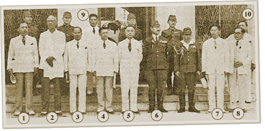

|
j
a v a s c r i p t |
January 24, 1942
Have to admire the British spirit of telling the truth in the face of disaster. A London broadcast started with Japanese landings in Bismarck, New Guinea and Solomon Islands; a British general retreat in Malaya; Rommel’s capture of Agedabia in Libya ... and that was just the start! Even in her most victorious days, Japan will admit to NOT ONE of her airdromes bombed or troopships sunk. Only a confident heart could give out the news London did, and a timid, uncertain one hide the truth like the Japanese do. The thought lifted my spirits. The recently landed troops are turning up in Manila. Just before 1400, the Ford trucks out back started pulling out one-by-one. Under heavy canvas covers they carried folding, flat-bottomed wooden boats, each capable of taking twenty men. (Mac, I hope you’re psychic!) The C-in-C of the Japanese Army created an Executive Commission with Vargas as Chairman. The members read like a “Who’s-Who” of Philippine politics.

The Executive Commission — La Vanguardia photo
( 1) Claro M. Recto — Education, Health & Public Welfare ( 2) Rafael R. Alunan — Agriculture & Commerce ( 3) Antonio de las Alas — Farmland ( 4) José Yulo — President of the Supreme Court ( 5) President Vargas ( 6) The representative of the Japanese Commander in Chief ( 7) Benigno S. Aquino — Interior ( 8) Jose P. Laurel — Justice ( 9) Consul Jitaro Kihara (in white) (10) Quintin Paredes — Public Works & Communications The Japanese officers in the photo aren't named. Six departments were created, each with its own Japanese Advisor and Assistant Advocate. The order says the Chairman shall comply with the orders of the C-in-C, and, “the foremost importance shall be laid in satisfying the demands of the Imperial Japanese Forces.” (No doubt about who’s who!) Aguinaldo and Nolasco’s statements hailed it as “Independence with Honor.” |
|
|
|
|